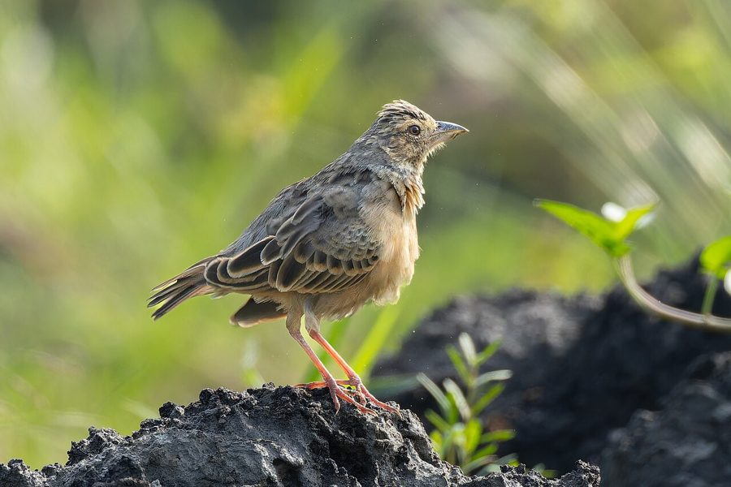

बंगाल बुशलार्कBengal Bushlark
Mirafra assamica · Alaudidae · BRD-0381

- Scientific name वैज्ञानिक नाम
- Mirafra assamica Horsfield, 1840
- Family कुल
- Alaudidae
- Hindi हिंदी
- बंगाल बुशलार्क
- Local names स्थानीय नाम
- bengal bushlark, aggia bushlark
- Status here यहाँ की स्थिति
- native
- Movement आवागमन
- Resident, here all year
- Known from कहाँ दर्ज
- Others have published records from the wider Awadh–Purvanchal plain, none yet from Basti–Ayodhya अवध–पूर्वांचल से दूसरों के प्रकाशित अभिलेख, बस्ती–अयोध्या से अभी नहीं
- IUCN IUCN
- LC
- Review समीक्षा
- not yet reviewed
When to look कब देखें
Expected mainly in February, November. मुख्यतः फ़रवरी, नवंबर में अपेक्षित।
Tell it apart from इनसे अलग पहचानें
बंगाल बुशलार्क / Bengal Bushlark
Mirafra assamica Horsfield, 1840 — Alaudidae
बंगाल बुशलार्क — तराई के घास के मैदानों और खुले खेतों के किनारों पर पाई जाने वाली भारी चोंच वाली चंडूल। इसका शरीर धूसर-भूरा और गहरी धारियों वाला होता है, और उड़ते समय इसके डैनों पर लाल-कत्थई चकते साफ दिखाई देते हैं। इसकी आंखें हल्की भूरी होती हैं। यह छोटी झाड़ियों या टीलों पर बैठकर पंख फड़फड़ाते हुए गाती है। हमारे क्षेत्र में इसके ऐतिहासिक नमूने 1876 और 1947 में संग्रहालयों के लिए एकत्र किए गए थे, लेकिन वर्तमान समय में इसकी उपस्थिति की कोई हालिया पुष्टि नहीं है।
Quick Identification त्वरित पहचान
| Feature | Description |
|---|---|
| Habit | Heavy-bodied, stout-billed lark perching upright on low bushes and singing from earthen mounds |
| Upperparts | Whole upper plumage ashy-brown streaked with black, black streaks obsolete on hind-neck and absent on rump (Baker 1926, p. 337) |
| Wing Flash | Quills dark brown, bases of outer webs and greater part of inner webs chestnut (Baker 1926, p. 337) |
| Underparts | Lower plumage dull fulvous, broadly streaked with black on lower throat, breast and sides of neck (Baker 1926, p. 337) |
| Bill & Head | Bill above dark horny-brown, yellowish next gape, lower mandible yellowish-horny; iris pale brown (Baker 1926, p. 338) |
| Bare Parts | Legs and feet pinkish-brown, yellowish-brown or dull fleshy (Baker 1926, p. 338) |
Field tip: Look for a stout lark perching atop low shrubs or grass patches, revealing chestnut wing panels when it flutters into the air (Baker 1926, pp. 337–338).
हिंदी — कैसे पहचानें:
धूसर-भूरा शरीर जिस पर काली धारियां हों, सीने और गर्दन पर चौड़ी काली धारियां, उड़ते समय डैनों पर कत्थई रंग, और हल्की भूरी आंखें (बेकर 1926)।
Morphology आकारिकी
Measurements as given by Baker (1926) for the Bengal Bush-Lark (Mirafra assamica):
| Measurement | Range |
|---|---|
| Biometrics | Wing 82 to 84 mm. ; tail 45 to 50 mm. ; tarsus 24 to 25 mm, ; culmen about 13 to 14 mm. (Baker 1926) |
Stuart Baker (1926, p. 337) described the adult plumage: "Whole upper plumage ashy-brown streaked with black, the black streaks obsolete on the hind-neck and not present on the rump; tail blackish-brown broadly edged with rufous, the penultimate pair of feathers with the outer web all of this colour and the outermost pair the same with paler brown inner webs ; lesser wing-coverts brown edged with ashy ; median coverts the same but sometimes tinged with rufous: greater and primary coverts dark brown broadly edged with rufous ; primaries and outer secondaries dark brown, the bases of the outer webs of all but the two first and the greater part of the inner webs chestnut ; inner secondaries dark brown edged with fulvous-ashy ; chin and throat fulvous-white ; a pale to bright fulvous supercilium ; cheeks and ear-coverts mixed fulvous and brown ; lower plumage dull fulvous, broadly streaked with black on the lower throat, breast and sides of the neck."
Colours of soft parts: "Iris pale brown ; bill above dark horny-brown, nearly black at the tip, yellowish next the gape, lower mandible yellowish-horny ; legs and feet pinkish-brown, yellowish-brown or dull fleshy" (Baker 1926, p. 338).
Vocalisations: "It has a sweet but not very powerful song, which it sings either seated on some bush or tall patch of grass, or as it flutters a little way into the air and then sails down on outstretched wings. It never soars and its flight is neither very strong nor sustained" (Baker 1926, p. 338).
हिंदी:
बेकर (1926) के अनुसार डैने 82 से 84 मिमी, पूंछ 45 से 50 मिमी, टार्सस 24 से 25 मिमी और चोंच 13 से 14 मिमी होती है। आंखें हल्की भूरी, चोंच ऊपर से गहरी सींग-भूरी व नीचे से पीली, और पैर गुलाबी-भूरे होते हैं।
Behaviour & Ecology व्यवहार और पारिस्थितिकी
Baker (1926, p. 338) recorded: "This Lark is a bird of well-wooded, well-watered country ; it is very abundant in Bengal, Assam and the low country at the foot of the Himalayas, extending in lesser numbers into Bihar, Western Bengal and the Nepal Terai. It becomes numerous again in the better-watered parts of the Central Provinces. It is a tame, familiar bird and though it keeps much to fairly long grass and bushes it does sometimes enter compounds and is common in cultivated fields. It has a sweet but not very powerful song, which it sings either seated on some bush or tall patch of grass, or as it flutters a little way into the air and then sails down on outstretched wings. It never soars and its flight is neither very strong nor sustained."
He added: "I have heard this Lark singing on bright moonlight night in Bengal, a most unusual thing for any Indian bird to do unless roused by some passing jackal or other vermin" (Baker 1926, p. 338).
हिंदी:
बेकर (1926) के अनुसार यह पेड़ों और पानी से युक्त नम क्षेत्रों का पक्षी है। यह लंबी घास और झाड़ियों में रहता है तथा खेतों व आहातों में भी आता है। यह झाड़ी पर बैठकर या हवा में थोड़ा ऊपर उड़कर डैने फैलाते हुए नीचे उतरते समय मीठा गीत गाता है।
Life Cycle / Phenology जीवन चक्र
Baker (1926, p. 338) recorded the breeding habits: "The Bengal Bush-Lark breeds at the commencement of the rains, making its nest in the end of May and early June so that the young hatch when the whole country is teeming with food. They probably have two broods, as fresh eggs have been taken as late as September and early October. The nest varies from a scanty pad of grass, loosely and carelessly thrown together, to a well-made cup with a dome made of dry and living grass with an entrance near the top."
In eastern Uttar Pradesh, historical museum specimens were collected during winter months in November and February. There are no modern breeding or sighting records from the region.
हिंदी:
बेकर (1926) के अनुसार यह मानसून के आरंभ में मई के अंत और जून में घोंसला बनाकर प्रजनन करती है, और सितंबर-अक्टूबर तक इसके ताजे अंडे देखे गए हैं। उत्तर प्रदेश में इसके ऐतिहासिक नमूने नवंबर और फरवरी में एकत्र किए गए थे।
Host Plants or Prey आहार
Baker (1926, p. 338) noted that it feeds on seeds and small terrestrial insects found among grass and cultivated fields.
हिंदी:
बेकर (1926) के अनुसार इसका आहार घास के बीज, खरपतवार के दाने और जमीन पर मिलने वाले छोटे कीड़े व इल्लियां हैं।
Predators / Natural Enemies शत्रु
Terrestrial predators including jackals and snakes, as well as diurnal raptors, hunt ground-nesting larks across open Terai pastures.
हिंदी:
खुले चरागाहों में जमीन पर रहने वाले शिकारी जानवर और छोटे शिकारी पक्षी इनका शिकार करते हैं।
Agricultural / Human Relevance कृषि प्रासंगिकता
Feeds on weed seeds and agricultural insect pests along cultivation edges without causing damage to crops. Protected under the Wildlife (Protection) Act, 1972.
हिंदी:
यह खेतों के किनारे खरपतवार के बीज और कीड़े खाकर कीट नियंत्रण करती है। यह वन्यजीव (संरक्षण) अधिनियम, 1972 के तहत संरक्षित है।
Expected Locally स्थानीय रूप से अपेक्षित
Not a field record. Written from published accounts for eastern Uttar Pradesh. No confirmed local sighting yet — if you have seen it, that is what the atlas needs.
अभी तक स्थानीय पुष्टि नहीं। यह विवरण प्रकाशित स्रोतों से है, किसी अवलोकन से नहीं।
Scrubby pasturelands, grassy dikes along canals, and open agrarian margins of the northern Terai belt offer suitable structural habitat for bushlarks.
GBIF holds published records from the wider Awadh–Purvanchal plain, none yet from Basti–Ayodhya. Regional records consist entirely of historical museum specimens: six specimens collected at Nichlaul in Maharajganj district between 1 and 12 February in 1947 by Walter Koelz and Thakur Rup Chand (preserved in the University of Michigan Museum of Zoology), and an earlier specimen collected at "Khatauli", placed by GBIF in Lakhimpur Kheri district, on 30 November in 1876 (preserved in the Royal Ontario Museum). No modern published records exist after 1947, and the species cannot be confirmed as present today.
A first record would be a photograph with place and date, sent through the About page.
Distribution वितरण
Global range: Baker (1926, p. 338) recorded the distribution: "Assam, Eastern Bengal, Bihar, Central Provinces, Oudh, Nepal, Sikkim and the whole of the Terai from Nepal to Eastern Assam ; Cachar, Sylhet and Manipur. South it extends on the East to Orissa. In Bengal it is confined to the rather well-wooded Eastern districts and in Bihar is not found apparently any great distance from the Terai."
In India: Baker (1926, p. 338) recorded that it extends across "Assam, Eastern Bengal, Bihar, Central Provinces, Oudh, Nepal, Sikkim and the whole of the Terai from Nepal to Eastern Assam".
In Uttar Pradesh: Documented solely from historical museum specimens collected in Maharajganj in 1947 and Lakhimpur Kheri in 1876; no modern reports exist from the state.
In Basti district / eastern UP: GBIF holds no record from Basti or Ayodhya; regional records are historical museum specimens collected in Maharajganj in 1947 and Lakhimpur Kheri in 1876.
हिंदी:
बेकर (1926) के अनुसार इसका वितरण असम, बंगाल, बिहार, मध्य प्रांत, अवध, नेपाल, सिक्किम और नेपाल से पूर्वी असम तक पूरे तराई क्षेत्र में तथा दक्षिण में उड़ीसा तक है। उत्तर प्रदेश में इसके रिकॉर्ड केवल महाराजगंज में 1947 और लखीमपुर खीरी में 1876 के पुराने संग्रहालय नमूनों तक सीमित हैं।
Research Questions शोध प्रश्न
- Do relict populations of the Bengal Bushlark persist undetected in the protected grasslands of the Maharajganj Terai? / क्या महाराजगंज के तराई घास के मैदानों में यह बुशलार्क आज भी कहीं बची हुई है?
- How did agricultural intensification and grassland conversion over the past century affect bushlark distribution in eastern Uttar Pradesh? / पिछली सदी में घास के मैदानों के खेतों में बदलने से इस चिड़िया पर क्या असर पड़ा?
- What differences in song structure separate Bengal Bushlarks from Oriental Skylarks?
- Can acoustic monitoring of mechanical wing-claps identify lingering bushlarks during the spring breeding period?
- Can local birdwatchers separate the Bengal Bushlark from the Crested Lark using wing color and crest shape? (An observer can look for the distinct rufous wing patch and heavy bill without a tall pointed crest.)
Similar Species मिलती-जुलती प्रजातियाँ
| Species | How to tell apart | हिंदी | |
|---|---|---|---|
| [[sand_lark | Sand Lark]] (Alaudala raytal) | Much paler sandy plumage, slender bill, strictly confined to river sandbars, lacks rufous wing patch (Baker 1926, p. 329) | सैंड लार्क |
| [[ashy_crowned_sparrow_lark | Ashy-crowned Sparrow-Lark]] (Eremopterix griseus) | Male has solid black belly; female has finch-like bill and lacks bright rufous wing patches (Ali & Ripley 1987) | दिवरी |
| [[oriental_skylark | Oriental Skylark]] (Alauda gulgula) | Pointed crest, slender bill, white outer tail feathers, lacks rufous wing panels (Baker 1926, p. 319) | भरत |
| [[crested_lark | Crested Lark]] (Galerida cristata) | Long upright crest on crown, heavily streaked upperparts, lacks rufous wing panel and wing-clapping flight (Baker 1926, p. 341) | चंडूल |
| [[greater_short_toed_lark | Greater Short-toed Lark]] (Calandrella brachydactyla) | Pale unstreaked underparts, dark neck patches, lacks rufous wing patch (Baker 1926, p. 324) | पुल्लुक |
| [[rufous_tailed_lark | Rufous-tailed Lark]] (Ammomanes phoenicura) | Deep rufous rump and upper tail-coverts, black-tipped rufous tail, unstreaked rufous-brown underparts (Baker 1926, p. 350) | रेतल |
Field rule: The stout conical bill, heavily dark-spotted breast, and prominent chestnut wing panels identify the Bengal Bushlark (Baker 1926, pp. 337–338).
हिंदी:
सैंड लार्क बहुत हल्की स्लेटी होती है; भरत और चंडूल के सिर पर नुकीली कलगी होती है; पुल्लुक के गले पर काला धब्बा होता है; रेतल की पूंछ पर कत्थई रंग होता है; बुशलार्क के डैनों पर लाल-कत्थई चकती होती है।
Taxonomy & Classification वर्गीकरण
Original description. Described by Thomas Horsfield in 1840 in Proceedings of the Zoological Society of London (Part 7, p. 162), under the binomial Mirafra assamica, from Assam.
Subspecies. Stuart Baker (1926, pp. 337–341) treated Mirafra assamica broadly, including races from southern India and Burma under nominate Mirafra assamica assamica, marionae, affinis, and microptera. Modern authorities split the complex into the Bengal Bushlark (Mirafra assamica sensu stricto) and the Jerdon's Bushlark (Mirafra affinis), with Mirafra assamica monotypic across the northern plains and Terai arc.
Family and order placement. Order Passeriformes, family Alaudidae (larks), genus Mirafra.
IUCN status rationale. Evaluated as Least Concern (LC) on the IUCN Red List (BirdLife International 2017).
हिंदी:
थॉमस हॉर्सफील्ड ने 1840 में असम से इसका वर्णन किया था। बेकर (1926) ने इसे विस्तृत रूप से माना था, लेकिन आधुनिक वर्गीकरण में इसे जेरडॉन बुशलार्क से अलग करके मोनोटाइपिक माना गया है। यह संकट-मुक्त (LC) है।
Photo Gallery फोटो गैलरी
No photos yet — add field photos to media/species/bengal_bushlark/ and run node scripts/sync_photos.js.
Photos needed आवश्यक फोटो
- [ ] Adult bird perched on low bush showing rufous wing patch (झाड़ी पर बैठा वयस्क पक्षी जिसमें डैनों का कत्थई रंग दिखे)
- [ ] Bird foraging on pasture ground showing breast spotting (जमीन पर दाना चुगता पक्षी जिसमें सीने के धब्बे दिखें)
References संदर्भ
- Horsfield, T. (1840). Proceedings of the Zoological Society of London. Part 7. London, p. 162 (as Mirafra assamica).
- Baker, E. C. S. (1926). The Fauna of British India, Including Ceylon and Burma. Birds. Vol. 3. 2nd ed. Taylor & Francis, London, pp. 337–339 (as Mirafra assamica assamica).
- Ali, S. & Ripley, S. D. (1987). Compact Handbook of the Birds of India and Pakistan. 2nd ed. Oxford University Press, New Delhi.
- Grimmett, R., Inskipp, C. & Inskipp, T. (2011). Birds of the Indian Subcontinent. 2nd ed. Christopher Helm, London.
- Rasmussen, P. C. & Anderton, J. C. (2012). Birds of South Asia: The Ripley Guide. 2nd ed. Smithsonian Institution and Lynx Edicions, Washington, D.C. and Barcelona.
- BirdLife International (2017). Mirafra assamica. The IUCN Red List of Threatened Species 2017: e.T22734352A118710813. doi:10.2305/iucn.uk.2017-3.rlts.t22734352a118710813.en
- GBIF Occurrence Data — Mirafra assamica, India (2025).
Source file: species/fauna/birds/bengal_bushlark.md